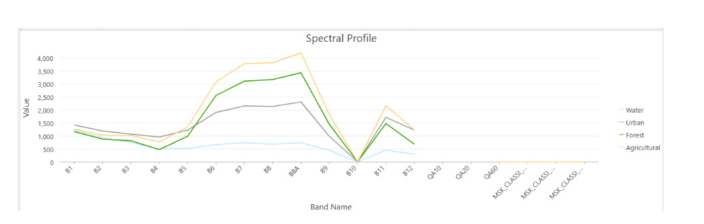
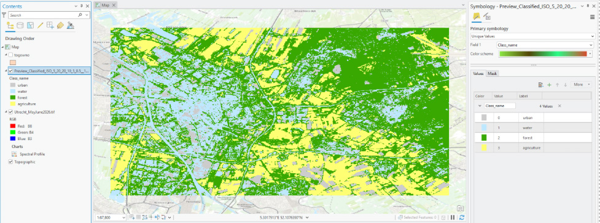
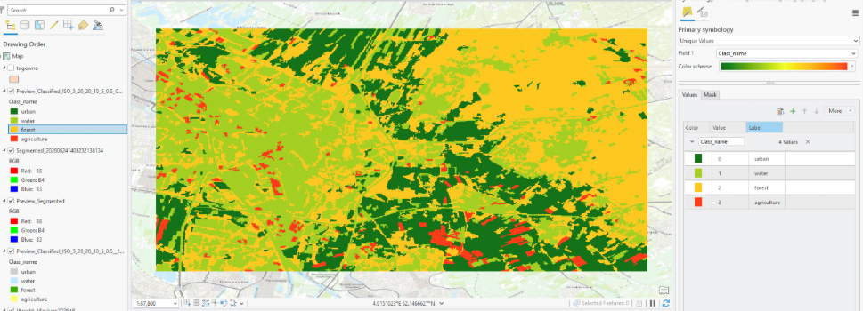
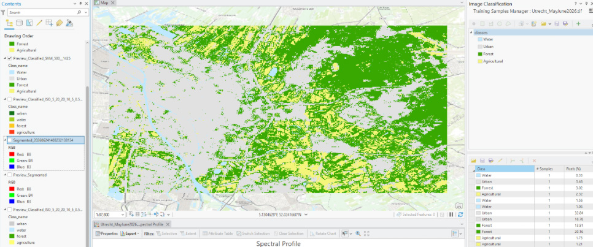
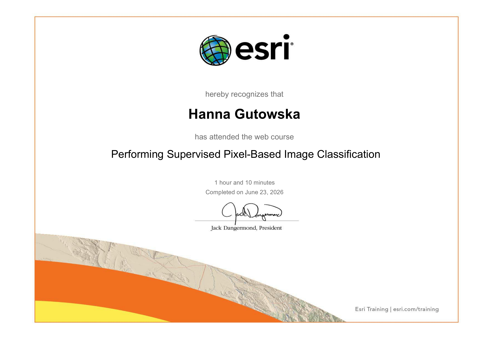

For this assignment, we focused on identifying and classifying different types of land use by analysing spectral signatures collected through remote sensing. The aim was to use Sentinel-2 satellite data to distinguish between different land categories, including urban, recreational, historical, and agricultural areas. After analysing the data, we created a map that displayed each land use type with a different colour, making it easier to visualise and understand the distribution of different land features across the area.
Imagine trying to manually draw borders around every single backyard, farm, forest, or road across your country. The amount of work and time it would take seems impossible, right?. That is wh Automated land cover classification is an important tool that uses machine learning to analyze aerial or satellite imagery and performs the categorization of landscapes into distinct groups like forests, water bodies, or urban areas in much shorter time
There are two primary methods of classification:
The level of detail on the map depends entirely on the sensor's spatial resolution. In this dataset, the individual pixels are rectangular rather than square, measuring approximately 18.6 meters in width by 30 meters in length.
What this means: A feature on the ground must be at least 18.6 x 30 m to occupy its own distinct pixel on the map.
The Mixed Pixel Effect: If a single 18.6 x 30 m area contains both a patch of grass and a house roof, their colors blend together into a single pixel. This composite signature can sometimes cause minor classification errors along boundaries.
The chart below displays the unique "spectral signatures" or light reflectance values for four distinct land cover types. Because different materials reflect light differently across various satellite bands, these curves allow the software to tell them apart.

This map shows the result of letting the computer automatically cluster pixels based on raw mathematical similarities. It has a characteristic granular, or "salt-and-pepper," appearance because adjacent pixels are categorized completely independently.

Unlike the pixel method, object-based classification groups neighboring pixels into distinct "shapes" or objects based on both color and proximity before running the classification. This creates a much cleaner, more general map that more closely reflects how humans naturally draw boundaries.

This map represents the final output generated after providing the software with custom training samples to guide its classification logic.

A confusion matrix is a cross-tabulation grid used in remote sensing to assess the statistical accuracy of a land-cover map. It compares predicted map classes directly against real-world reference data (ground truth) to reveal exactly where the algorithm successfully identified features and where it got "confused” (like classifying forest as water).
Project Note: While a confusion matrix is standard practice for validating data accuracy, I wasn’t able to perform it due to a persistent error.
